Responder · Video walkthrough
Responder: your account, availability, and security
Learn which identity Responder represents, sign in on the correct server, set personal status and staffing, and protect access to departmental information.
Before you begin
- An isolated training department, a member account, configured personnel statuses and staffing levels, and sample calls, stations, and POIs.
- A second demonstration session for approval; SSO, MFA, and passkeys configured only for the corresponding optional branches.
- A native device for platform permission demonstrations. Show browser differences explicitly; capture plans are not proof of delivered notifications or working hardware.
Chapters
- Start with your own identity
- First launch and language
- Select a server before signing in
- Use organization sign-in when enabled
- Complete verification and plan recovery
- Set a personal status deliberately
- Choose the destination and required note
- Keep staffing availability accurate
- Read the personnel and unit picture
- Review passkeys and verification activity
- Approve only the request you started
Watch the walkthrough
Step 1
Start with your own identity
Responder is the personal workspace for a named member. Check the account and department, then read My Status and My Staffing on Home. People, Units, and Calls provide the wider operating picture. A community response team can use the same pattern to show who is available and which incident each person is joining. Every name and incident shown here belongs to our fictional training department.

Practice
Identify the signed-in training member, compare the two personal cards, and locate the People, Units, and Calls tabs.
Step 2
First launch and language
First launch introduces Resgrid Responder, Instant Notifications, and Interact with Calls. Use Next to read each page, Skip to leave the introduction, or Let’s Get Started on the final page. Language is available on the login screen. These introduction pages describe intended features; they do not establish that this browser has received a push notification or exercised a native device permission.
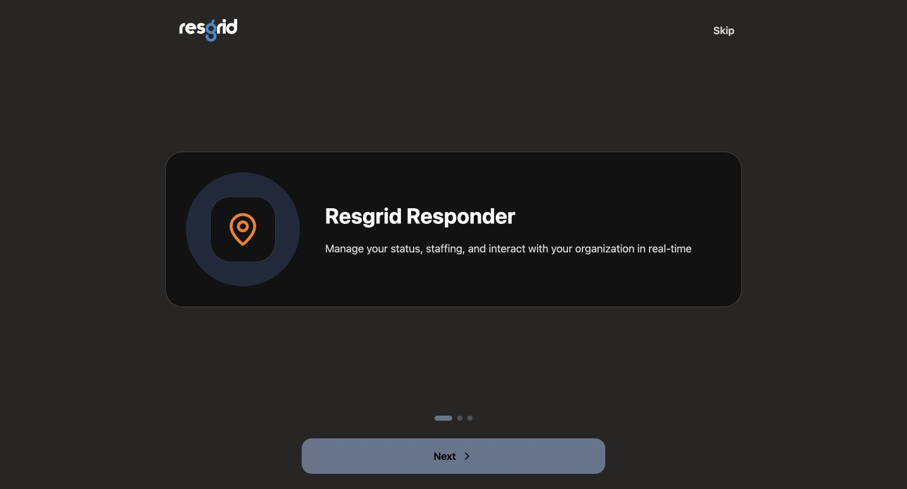
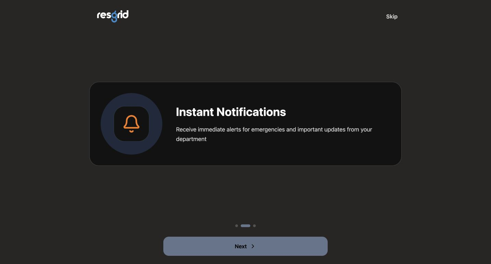
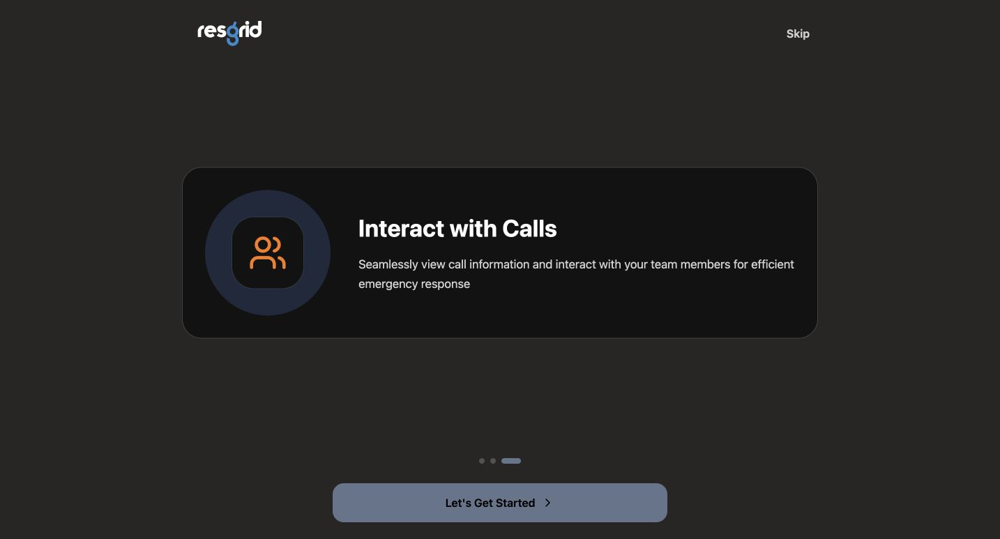
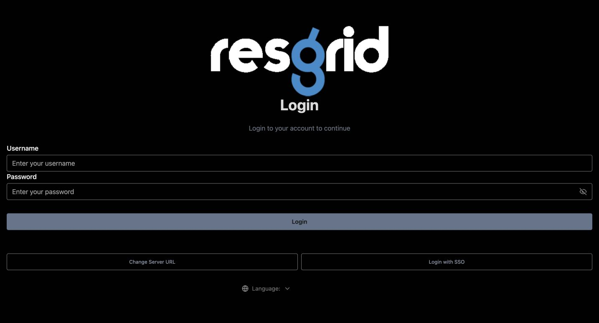
Practice
Read the three introduction pages and locate Language on the empty login screen without entering or exposing credentials.
Step 3
Select a server before signing in
Use Change Server URL before signing in when your organization supplies a different API endpoint. The Server selector offers regional choices and Custom; Server URL takes the API origin without slash api slash v four or a trailing slash. This recording uses only the local fictional API. Return to Username and Password, then Login using your own authorized account. Keep credentials outside screenshots and shared recordings.
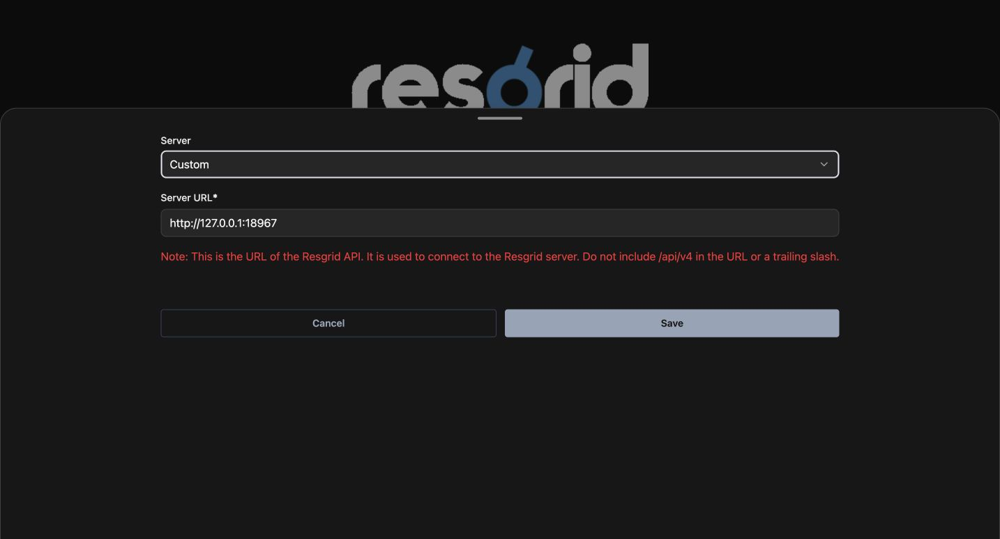
Practice
Inspect the training API origin and identify Save, then explain which account and department should appear after authorized sign-in.
Step 4
Use organization sign-in when enabled
Login with SSO opens a separate entry screen with Username or Email and Department ID, which is optional. Continue starts the organization’s configured identity flow. The training environment has no usable identity-provider discovery configuration, so this is an entry-screen walkthrough only. A deployed organization must verify its provider, return link, and any additional challenge on the intended platform before relying on that sign-in path.
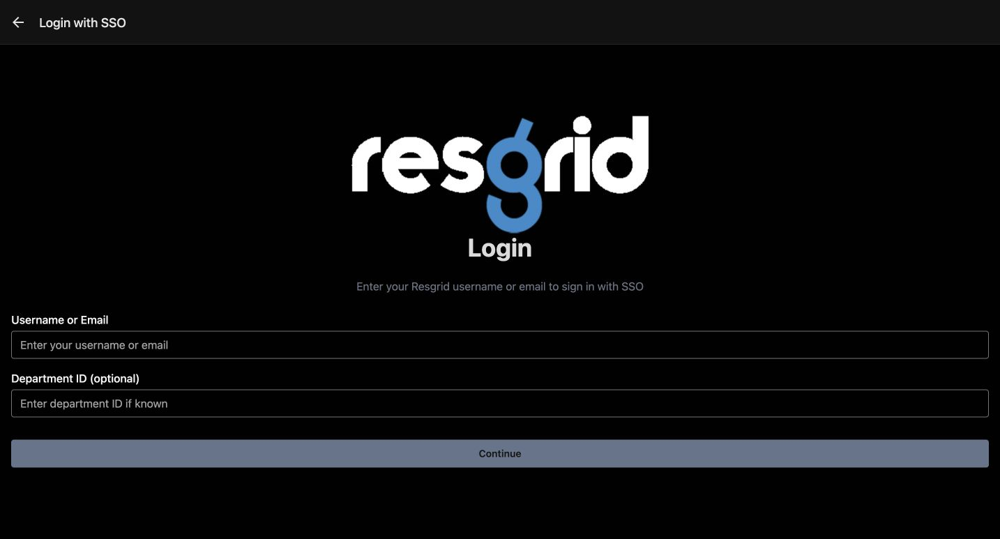
Practice
Find the two SSO fields and explain why viewing Continue does not prove a provider sign-in succeeded.
Step 5
Complete verification and plan recovery
Recover your account explains that a recovery code is entered after a password or organization sign-in. Without that code, contact the department administrator or support; this screen cannot turn off two-factor authentication. Back to sign in returns to the normal entry point. We are showing the actual no-challenge view, without changing credentials, creating recovery codes, or claiming that verification has completed.
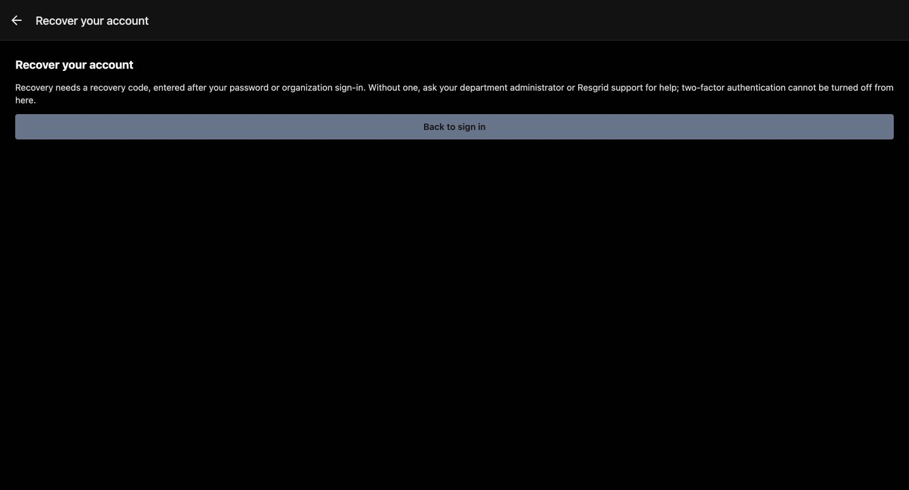
Practice
Read the recovery prerequisite and return to sign-in; describe the authorized help path when a recovery code is unavailable.
Step 6
Set a personal status deliberately
On Home, select Status and read the offered choices before changing your personal state. This department offers Responding, Not Responding, On Scene, and Standing By. Its labels and transitions come from department configuration. The example selects Responding and opens Set Status: Responding. After the completed action, My Status shows the saved state and destination. Use the displayed result to confirm the change.
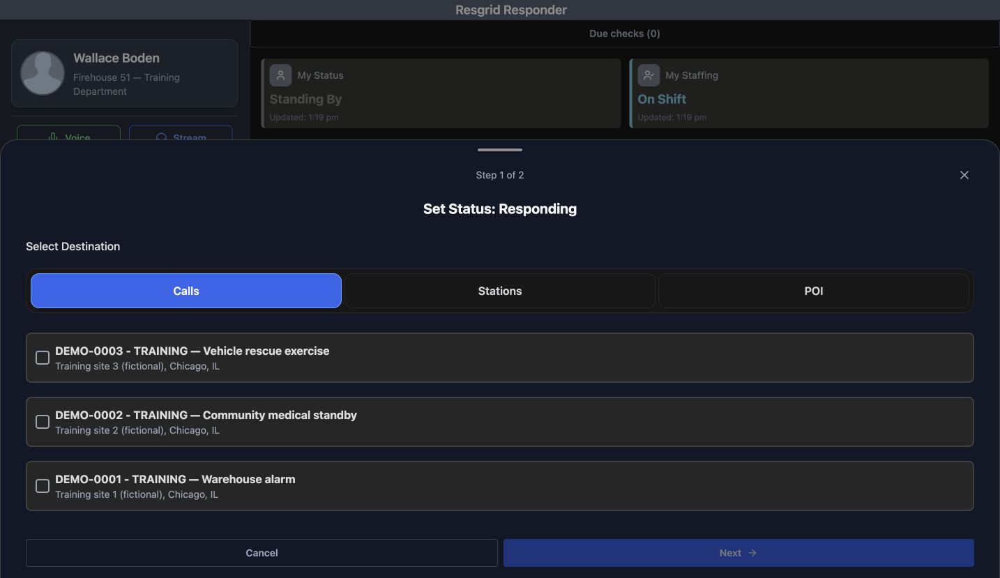
Practice
Compare the current personal card with the available states, then identify which action opens the destination step.
Step 7
Choose the destination and required note
The destination step separates Calls, Stations, and POI. Select the intended destination before moving to Add Note. In this exercise, the community medical standby is the chosen call and the note clearly says it is an Academy exercise. Save completes the personal status change, and the Home card displays that destination. Read any required-field instruction in your department rather than assuming every status uses the same steps.
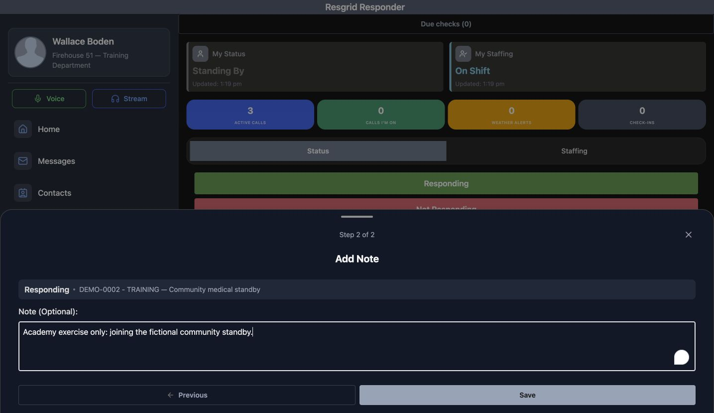
Practice
Use the fictional standby to trace destination, note, Save, and the resulting Home card without starting a live response.
Step 8
Keep staffing availability accurate
Staffing records your availability for assignment. This department offers Available, Delayed, Unavailable, Committed, and On Shift. The example chooses Available, uses Add Note to state the training availability window, and checks Review and Confirm before Submit. My Staffing then shows the saved result. Personal status and staffing serve different coordination needs, so read both cards when handing over a community care or search-team duty period.
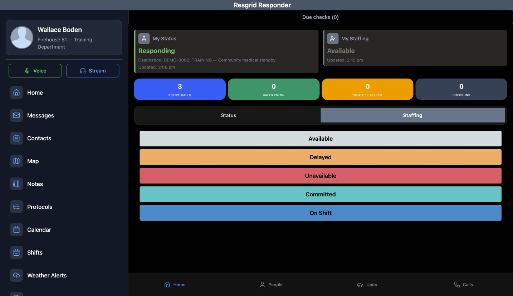
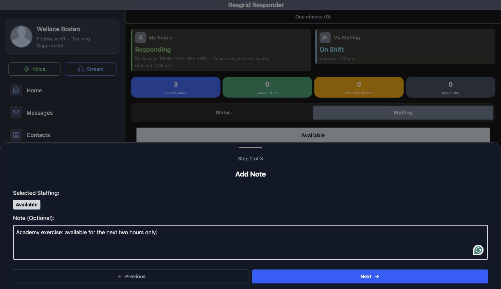
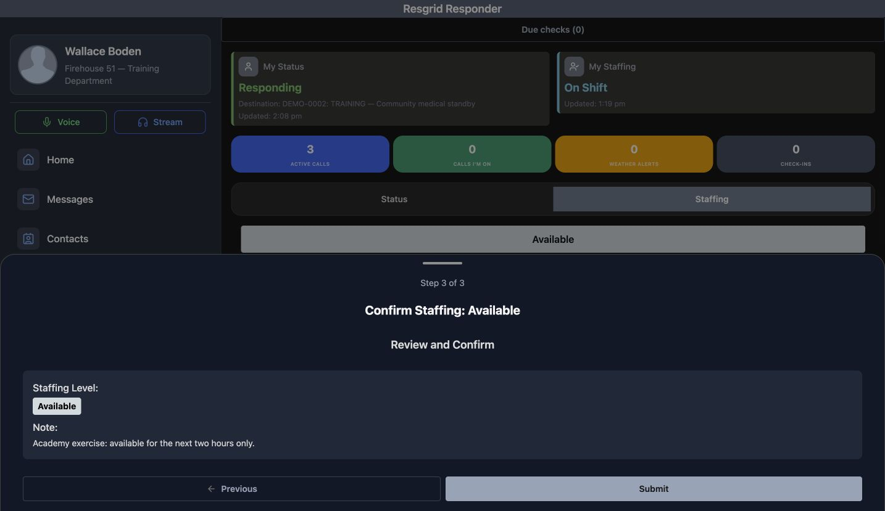
Practice
Trace the fictional availability note through confirmation and verify the resulting My Staffing card.
Step 9
Read the personnel and unit picture
People shows the member’s group, role, status, staffing, and update time. Search personnel and Filter Personnel narrow that picture by Groups and Roles. Units has its own search and opens resource details such as Location and Vehicle Information. These are useful reference views for a search-and-rescue team, security patrol, or industrial standby. Reading a unit here does not establish an active shared-device crew session.
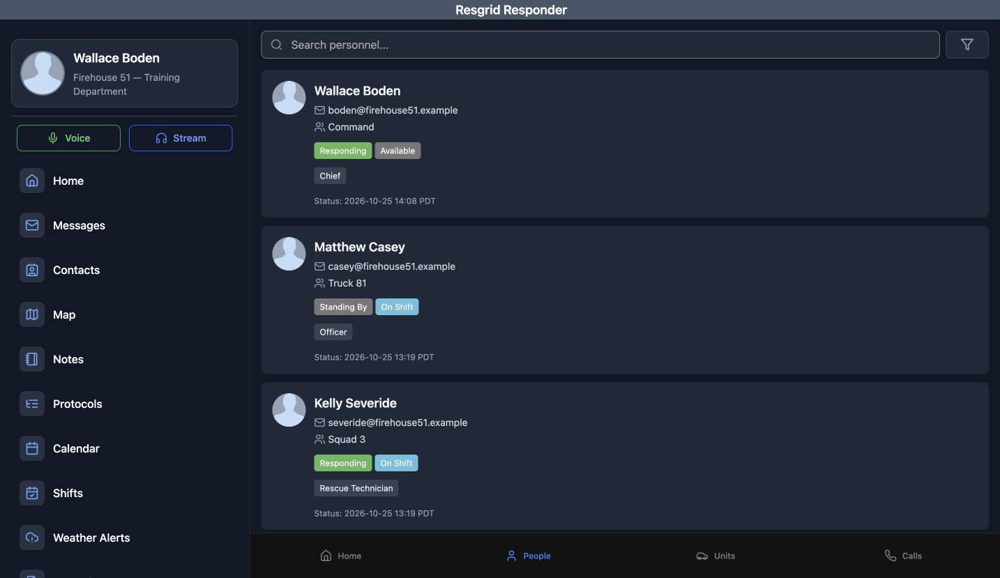
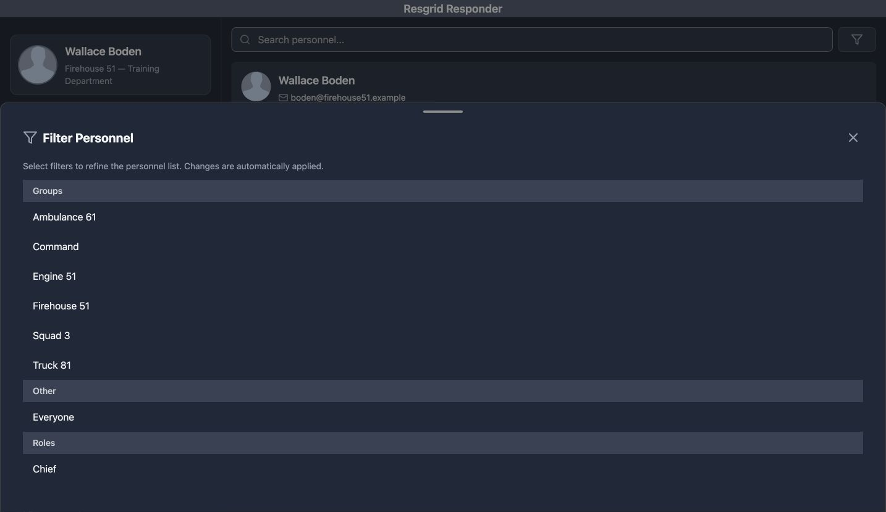
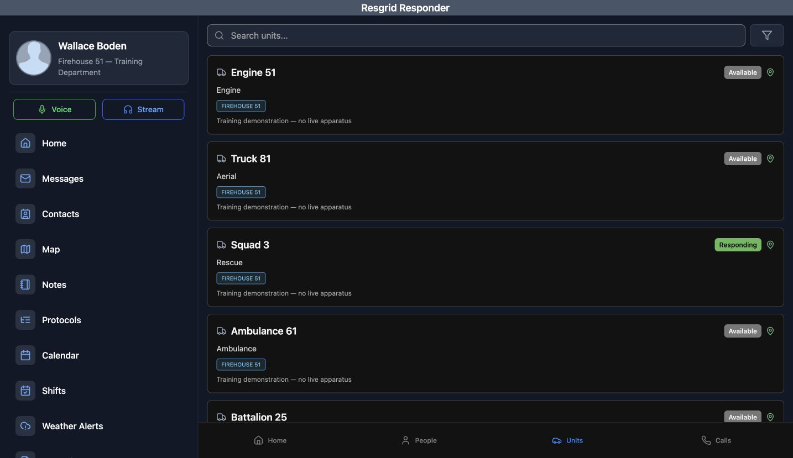
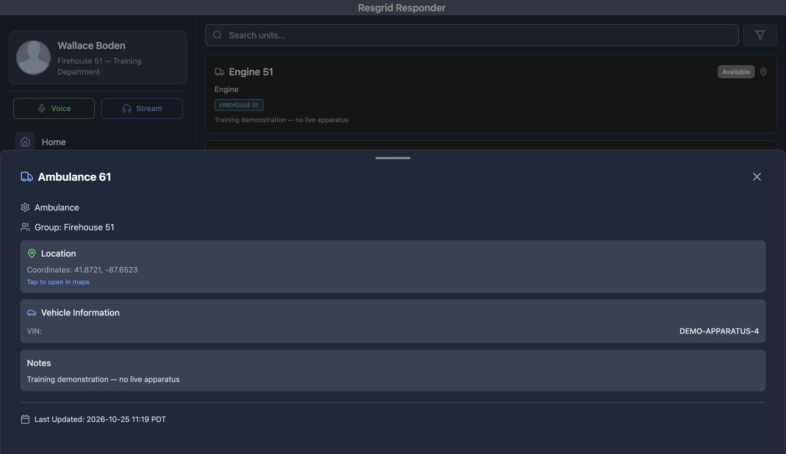
Practice
Find a training member by group, compare a unit card, and inspect the fictional ambulance’s detail without changing its status or crew.
Step 10
Review passkeys and verification activity
Open Sign-in and security to review Authenticator app, Passkeys for this app, and Recent verifications. The actual training account says its authenticator is not set up, has no app passkeys, and has no verifications in the last thirty days. Those are configuration states, not proof of a successful challenge. Setup or credential changes belong to the organization’s approved security process and are outside this exercise.
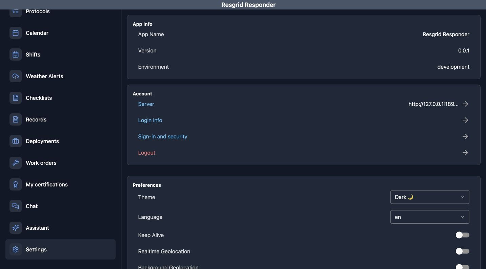
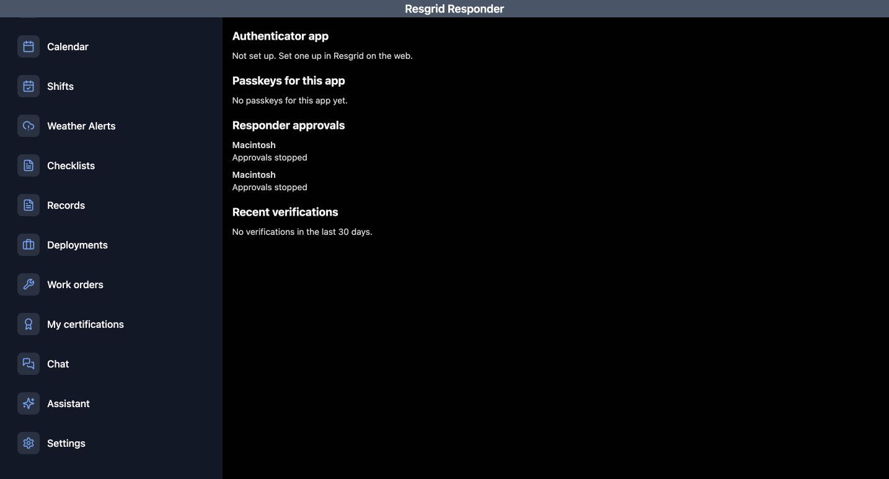
Practice
Read the three security sections and distinguish an unconfigured method from a completed verification.
Step 11
Approve only the request you started
Responder approvals lists device approval availability; this account shows Approvals stopped. A configured approval request must be matched to a sign-in you initiated, including its number, before any approval. No challenge or hardware notification was exercised here. For a shared or handed-over device, Logout asks for confirmation before clearing local session data. The declared web recording adapter preserves the source confirmation text and buttons; native confirmation remains platform-specific.
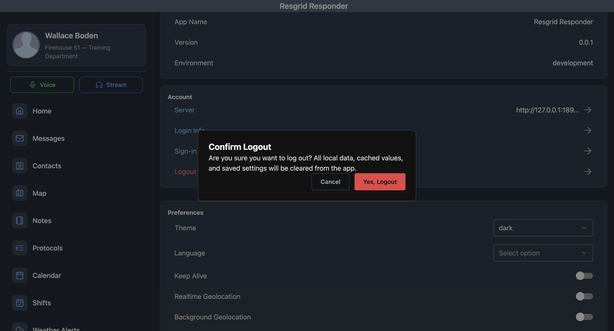
Practice
Explain why an unfamiliar approval should not be accepted, then read the logout warning and identify Cancel and Yes, Logout without exposing credentials.
Examples for your department
- Fire / EMS
- A fire or EMS member checks in before a fictional standby.
- Community response
- A mobile crisis or community-care responder makes availability clear.
- Search and rescue
- A SAR volunteer prepares for a staging assignment.
- Security
- A security officer begins a patrol shift.
- Wildland
- A wildland mutual-aid member reviews access and readiness.
- Industrial
- An industrial response member uses the personal app alongside a vehicle tablet.
Transcript
Download transcriptRead the complete transcript
Responder: your account, availability, and security Audience: Individual members, volunteers, responders, and supervisors using their own account. Start with your own identity Responder is the personal workspace for a named member. Check the account and department, then read My Status and My Staffing on Home. People, Units, and Calls provide the wider operating picture. A community response team can use the same pattern to show who is available and which incident each person is joining. Every name and incident shown here belongs to our fictional training department. Practice: Identify the signed-in training member, compare the two personal cards, and locate the People, Units, and Calls tabs. First launch and language First launch introduces Resgrid Responder, Instant Notifications, and Interact with Calls. Use Next to read each page, Skip to leave the introduction, or Let’s Get Started on the final page. Language is available on the login screen. These introduction pages describe intended features; they do not establish that this browser has received a push notification or exercised a native device permission. Practice: Read the three introduction pages and locate Language on the empty login screen without entering or exposing credentials. Select a server before signing in Use Change Server URL before signing in when your organization supplies a different API endpoint. The Server selector offers regional choices and Custom; Server URL takes the API origin without slash api slash v four or a trailing slash. This recording uses only the local fictional API. Return to Username and Password, then Login using your own authorized account. Keep credentials outside screenshots and shared recordings. Practice: Inspect the training API origin and identify Save, then explain which account and department should appear after authorized sign-in. Use organization sign-in when enabled Login with SSO opens a separate entry screen with Username or Email and Department ID, which is optional. Continue starts the organization’s configured identity flow. The training environment has no usable identity-provider discovery configuration, so this is an entry-screen walkthrough only. A deployed organization must verify its provider, return link, and any additional challenge on the intended platform before relying on that sign-in path. Practice: Find the two SSO fields and explain why viewing Continue does not prove a provider sign-in succeeded. Complete verification and plan recovery Recover your account explains that a recovery code is entered after a password or organization sign-in. Without that code, contact the department administrator or support; this screen cannot turn off two-factor authentication. Back to sign in returns to the normal entry point. We are showing the actual no-challenge view, without changing credentials, creating recovery codes, or claiming that verification has completed. Practice: Read the recovery prerequisite and return to sign-in; describe the authorized help path when a recovery code is unavailable. Set a personal status deliberately On Home, select Status and read the offered choices before changing your personal state. This department offers Responding, Not Responding, On Scene, and Standing By. Its labels and transitions come from department configuration. The example selects Responding and opens Set Status: Responding. After the completed action, My Status shows the saved state and destination. Use the displayed result to confirm the change. Practice: Compare the current personal card with the available states, then identify which action opens the destination step. Choose the destination and required note The destination step separates Calls, Stations, and POI. Select the intended destination before moving to Add Note. In this exercise, the community medical standby is the chosen call and the note clearly says it is an Academy exercise. Save completes the personal status change, and the Home card displays that destination. Read any required-field instruction in your department rather than assuming every status uses the same steps. Practice: Use the fictional standby to trace destination, note, Save, and the resulting Home card without starting a live response. Keep staffing availability accurate Staffing records your availability for assignment. This department offers Available, Delayed, Unavailable, Committed, and On Shift. The example chooses Available, uses Add Note to state the training availability window, and checks Review and Confirm before Submit. My Staffing then shows the saved result. Personal status and staffing serve different coordination needs, so read both cards when handing over a community care or search-team duty period. Practice: Trace the fictional availability note through confirmation and verify the resulting My Staffing card. Read the personnel and unit picture People shows the member’s group, role, status, staffing, and update time. Search personnel and Filter Personnel narrow that picture by Groups and Roles. Units has its own search and opens resource details such as Location and Vehicle Information. These are useful reference views for a search-and-rescue team, security patrol, or industrial standby. Reading a unit here does not establish an active shared-device crew session. Practice: Find a training member by group, compare a unit card, and inspect the fictional ambulance’s detail without changing its status or crew. Review passkeys and verification activity Open Sign-in and security to review Authenticator app, Passkeys for this app, and Recent verifications. The actual training account says its authenticator is not set up, has no app passkeys, and has no verifications in the last thirty days. Those are configuration states, not proof of a successful challenge. Setup or credential changes belong to the organization’s approved security process and are outside this exercise. Practice: Read the three security sections and distinguish an unconfigured method from a completed verification. Approve only the request you started Responder approvals lists device approval availability; this account shows Approvals stopped. A configured approval request must be matched to a sign-in you initiated, including its number, before any approval. No challenge or hardware notification was exercised here. For a shared or handed-over device, Logout asks for confirmation before clearing local session data. The declared web recording adapter preserves the source confirmation text and buttons; native confirmation remains platform-specific. Practice: Explain why an unfamiliar approval should not be accepted, then read the logout warning and identify Cancel and Yes, Logout without exposing credentials. Examples for your department Fire / EMS: A fire or EMS member checks in before a fictional standby. Community response: A mobile crisis or community-care responder makes availability clear. Search and rescue: A SAR volunteer prepares for a staging assignment. Security: A security officer begins a patrol shift. Wildland: A wildland mutual-aid member reviews access and readiness. Industrial: An industrial response member uses the personal app alongside a vehicle tablet.